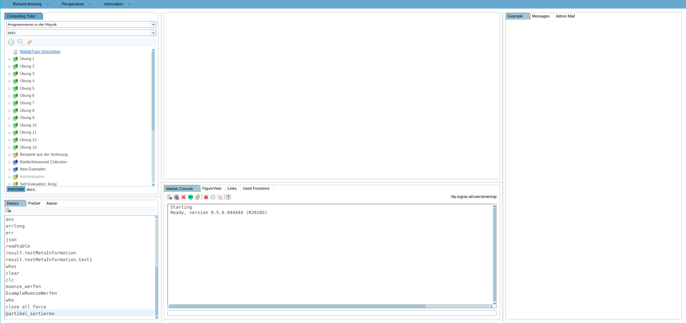

Student Perspective¶
Welcome¶
If you are reading this, you are probably a new student using the Matlab-Tutor application. If so, we are pleased to welcome you! In this place, we will gather some information, to get you going and make your experience in solving coding examples as pleasant as possible. A lot of work went into building the Matlab-Tutor, as well as creating coding examples for you to work on, and we hope to provide you the best learning experience possible. If any questions arise, regarding either the Matlab-Tutor application, or the examples you are working on, don’t hesitate to contact one of you supervisors. Your questions and feedback are immensely helpful, and allow us to further improve the experience for you and future students following your steps. With that being said, let’s get to the core:

When you are logging in into the MatlabTutor, you will be faced by a Page similar to the one above. There are different so-called ‘Perspectives’, and the default one is called ‘Matlab Tutor’. There are more perspectives available to you, and you can switch between them by selecting them from the tab in the top, but the default perspective is definitely the most important one to you. This is the place where you select your examples to work on, where you see the problem description, where you programm your solutions and also validate them once they are ready.
On the left you can select your available courses, and below, in the so-called example-tree, you can select different examples from different units. Once you select an example, the problem description opens on the right side, and a text editor activates in the middle of the screen. Notice that the texteditor gives you access to different files (these are files we specified on a per-example basis). There may be examples that require you to split your code into different files, so be sure to put your code into the correct files! Additionaly, you may see two files called ‘MyUnitNotes’, one being markdown, and the other being a matlab file. This is the place where you can document your own lessons, and also try code that is not necessarily example-related. These two files are not related to a single example, but instead are available to the specific unit you are working in. If you put information in them, it will be available across all examples of that particular unit.
When working on examples, we want you to follow a specific routine, in order to accustom you to a healthy coding process and allow you to deal with more complex problems you may face in your future. The routine has no strict order, but consists of the following points:
Work on your examples incrementally. Don’t code the entire example at once, and then see if it works (it won’t). Instead, write a few lines, run your programm (this does not yet mean ‘validate’), and see if the intermediate results match your expectation. Far too often, bugs are introduced because early in our programm, some instruction returned a value slightly different from our expecation. We then try to fix these bugs by changing our code further downwards, only to find the bugs to consist, and wasting a lot of time and nerves. If you are certain about your intermediate results at all stages, you will save time, and arrive at the correct solution quickly.
Use the console. The console may look rudimentary, but it may be the most important tool at our hand when coding. It allows you to run your programms by either entering the script-filename if you are working in a script, or calling functions you currently work on. Besides running programms, you can enter every kind of valid matlab instruction, and see how the result looks like. This goes hand in hand with working incrementally and knowing our intermediate results. There are programmers who run and test their code for every single instruction they add. Most often, these programmers are the fastest ones, because they never waste their time finding bugs. Constantly running and testing our results saves a lot of time, and the console is the proper place to do that.
Structure your code nicely. Simple solutions generally are good solutions. By structuring your code in a clear way, you not only lower the cognitive burden put on yourself when reasoning about you code, you also decrease the chance of introducing bugs. Nested if-condititons for example are not only difficult to understand, they are also error prone, and often symptoms of bad structure. Keep in mind that programming is as much communicating your ideas with other people, as it is communicating with your computer. Make the life of people reading your code (including yourself) as easy as possible.
Validate your programs only when you are confident that they are correct. Often, students fall into the habit ob abusing the validation test. They try to use the validation to make the program run or return correct results. That is not what the validation is for, and it is not how we intend it to be used. Their ability to give you hints about improving faulty code is very limitted, and validation can help you not a single bit when your program doesn’t even run. Any helpful matlab error messages provided by the interpreter will be hidden once you validate your examples. Also, later on you will not be provided with a set of tests to check your code in most cases, only when you wrote those tests beforehand. It is much quicker and more helpful to test your code yourself in the console.
Additional Info¶
Uploading custom files as a student¶
Some examples may require you to updload your own files. If these are text-files like markdown or csv, we’ve already prepared empty files where you can paste their content. In some cases though, you may be required to updload different file-types, like Excel or PNGs. As a student, you currently don’t have the ability to simply upload any file to your examples (a limitation of the Matlab-Tutor, but already being worked on). Therefore, we need a little workaround, as shown in the following. First, we change our current directory to the example directory, using the cd command within the console. The directory will be provided in the problem description:
cd '/afs/itp.tugraz.at/user/ameringr/ComputingTutor/Examples/vt2.2021.GrundlagenCVectorIO'
Then we will use the system-call wget to load the desired file from a website into the example directory. For this, you need a link to the specific file. In this example, we will download an excel-file from TU-Cloud:
system('wget https://cloud.tugraz.at/index.php/s/nabrQ9YKwHPkLsB/download')
Run the ls command to list the contents of the current directory. You should now see a new entry called download:
ls
README.mmd GrundlagenCVectorIO.mmd
rawData1.dat rawData2.dat
download
The final step is to rename the file, and include the correct file-extension, xlsx in this case. This is being achieved by using the system call mv, by providing the file to rename first, followed by the desired name:
system('mv download excelfile.xlsx')
Another call to ls should show the file being renamed to excelfile.xlsx:
ls
README.mmd GrundlagenCVectorIO.mmd
rawData1.dat rawData2.dat
excelfile.xlsx
If everything worked well, you can now use the file in solving your examples.